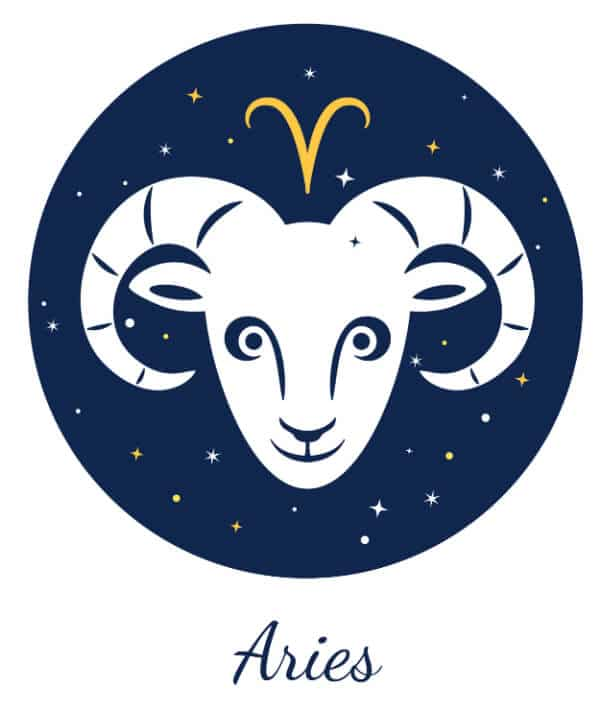

←
ARIES AND SCORPIO COMPATIBILITY-



Aries and Scorpio Nature and Nuances:
Communication :
Pros of the Aries Scorpio Relationship:
The strong, tactical approach of the Scorpion helps Aries give direction to its sometimes wayward dreams. The former also teaches the latter how to take things slowly and think without acting in emotionally draining situations.
On the other hand, the Arian brings a certain degree of warmth and excitement to the Scorpion’s life. The Ram teaches the Archer to let go of certain insecurities in life and encourages him/her to embrace positivity no matter what any particular situation stands for.
The mutual trust between the two is one of the strongest points of their zodiac relationships. Both of them abhor lies and cannot stand dishonesty, which is why they can believe in each other with closed eyes.
Cons of the Aries Scorpio Relationship:
The brashness and harsh words of the Arian can be too much to handle for the Scorpion, on some occasions. This can lead to fights between the Aries and Scorpio, and they are both not inclined towards compromise in such situations, which leads to an augmentation of their argument more often than not.
The extroverted and social Aries is different from the aloof, and sometimes standoffish, Scorpion. They find it difficult to see eye to eye in certain situations because of their mutual differences.
The fire sign Aries and the water sign Scorpio need to find a way to coexist together without trying to destroy each other. They stand for divergent things in life, but that does not necessarily have to be a bad thing.
Love :
The relationship between Aries man and Scorpio woman is characterized by its intensity, passion, and fiery arguments. These two signs are attracted to each other from the word go, and their bond grows over time due to the commitment that they exhibit to their relationship.
The depth of the Scorpio personality and the sense of mystery that is always attached to it will draw the Arian immensely. On the other hand, the exuberant persona of Aries, mingled with its uninhibited energy, will attract Scorpio towards the Ram.
Both have a level of sexual intimacy wherein its main features are high-octane intensity and fiery physical moments. This kind of physical connection is also loved and cherished by a Scorpio man and Aries woman.
Compatibility:
The Aries is the first sign of the zodiac chart. These Aries personalities are known for their powerful presence. They are courageous, ambitious, and extremely generous in everything that they do. This fire sign is not afraid of taking risks to reach the heights it aims for in life. Aries is a hardworking sign that not only believes in the power of immense toil and dedication, but also relies on spontaneity and instinct from time to time.
Scorpio is one of the most passionate and sensuous signs of the zodiac. Standing ninth on the zodiac chart, this water sign is characterized by its resourcefulness, courage, and patience. These signs value their loved ones in life and cannot stand the thought of anyone wronging them. They are sticklers for honesty and fairness, while they hate anyone who operates with lies and deceit. The Scorpion is a dedicated partner in a relationship when it decides to commit to it in full throttle.
- The strong, tactical approach of the Scorpion helps Aries give direction to its sometimes wayward dreams. The former also teaches the latter how to take things slowly and think without acting in emotionally draining situations.
On the other hand, the Arian brings a certain degree of warmth and excitement to the Scorpion’s life. The Ram teaches the Archer to let go of certain insecurities in life and encourages him/her to embrace positivity no matter what any particular situation stands for.
The mutual trust between the two is one of the strongest points of their zodiac relationships. Both of them abhor lies and cannot stand dishonesty, which is why they can believe in each other with closed eyes.
- The brashness and harsh words of the Arian can be too much to handle for the Scorpion, on some occasions. This can lead to fights between the Aries and Scorpio, and they are both not inclined towards compromise in such situations, which leads to an augmentation of their argument more often than not.
The extroverted and social Aries is different from the aloof, and sometimes standoffish, Scorpion. They find it difficult to see eye to eye in certain situations because of their mutual differences.
The fire sign Aries and the water sign Scorpio need to find a way to coexist together without trying to destroy each other. They stand for divergent things in life, but that does not necessarily have to be a bad thing.